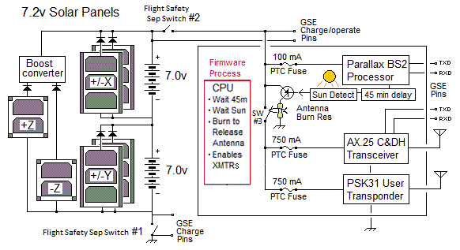

The satellite will respond with a packet ACK and then the spoken text. Remember that this APRS-to-Voice
message capabiliity is added to the DTMF mode and so the uplink channel remains the DTMF uplink on 145.980
and downink remains 145.825. The probabilities of success even with a perfect link is not 100% because
the simple BasicStamp processor on PSAT2 now must scan looking for DTMF and then check for packet and
the chance that it misses one is maybe 10%.
Message 43, Go Navy...
You will notice the voice synthesizer on PSAT2 is much better than the one on QIKCOM-2.
Low Cost Comms Board: Another feature of these cubesats is our development of a standardized cubesat communications card
(shown below right) based on the popular
Byonics MTT4B all-in-one APRS Tiny-Track4 module.
We standardized the MTT4B onto a standard cubesat-104 board (and adding a 9600 baud UHF downlink if needed)
to allow other schools to rapidly develop their own amateur radio cubesat projects. We call this board the SATT4.
Download a copy of our draft SATT4 Documentation.
 . .
. .

OVERVIEW: . PSAT2 is a student senior engineering project built by a group of students at the Naval Academy
for self training in smallsat technology. It was launched 25 June 2019 on the STP-2 mission of SpaceX-Heavy.
It should have a life span of several years.
It continues the PCsat(2001) and PSAT-1(2015) missions noted above containing
an APRS packet radio communications transponder for relaying remote telemetry,
sensor and user data
from remote users and amateur radio environmental experiments or other data sources back to
Amateur Radio experimenters via a global network
of internet linked volunteer ground stations. The APRS transponder also includes
telemetry, and some command and control for the user modes. PSAT2 also adds a unique experimental DTMF
uplink on 145.98 MHz for users in the field who might not have access to an APRS radio.
 Operations under ITU Rules: PSAT2 operates under the ITU rules of the Amateur Satellite Service.
See how PSAT2 design and operation fit entirely within the ITU International Amateur Radio
RULES. The FCC does not issue
licenses for Amateur Radio Spacecraft
(see public notice) because they are operated under the
license of the individual amateur radio operator who is responsible to assure
that both the design and operation are within the rules of the ITU as interpreted by the IARU. Our licensed control operator is Todd Bruner, WB1HAI in Annapolis.
Operations under ITU Rules: PSAT2 operates under the ITU rules of the Amateur Satellite Service.
See how PSAT2 design and operation fit entirely within the ITU International Amateur Radio
RULES. The FCC does not issue
licenses for Amateur Radio Spacecraft
(see public notice) because they are operated under the
license of the individual amateur radio operator who is responsible to assure
that both the design and operation are within the rules of the ITU as interpreted by the IARU. Our licensed control operator is Todd Bruner, WB1HAI in Annapolis.
APRS Up/Downlink . 145.825 1200 baud APRS (shared with ISS, PCSAT, PSAT, AISAT-1 and others!)
DTMF Uplink . . . . . . 145.980 MHz (Voice confirmation down on 145.825 MHz)
PSK31 Downlink. . . . 435.350 MHz +/- 5 kHz FM (300 mw)
PSK31 Uplink . . . . . . . 29.4815 MHz PSK31 SSB (25 watts into omni vertical authorized)
. . .
PSAT2 Digipeater Aliases: To join the existing APRS satellites on orbit and operate as a seamless constellation,
PSAT2 supports the same APRSAT and ARISS generic aliases as the original
PCSAT (NO44)
PSAT and the
packet system on the ISS so that users do not have to change any parameters
when using any of these three APRS transponders.
APRStt GRID MAP Encoding: The map table below encodes the 99 grids that have 99.99% of the
worlds ham population into only 4 DTMF digits by converting
the first two letters into two digits from the 00-99 table.
You can see that our Maryland FM19 grid becomes 1819 in DTMF.
A table is also shown below that simpilfies finding your grid. Notice that three grids for Indonisa
OI, OJ, and PI
appear in the Canada, USA and Central America blocks. Our appologies for those grids
that did not make the cut into the top 99. We can try to accomodate special grids on request.
For example, we have assigned Hawaii's BL as "HI" and BK as "HH". Then by translating on the
ground on the
User DTMF page, we can translate back.
 . . .
. . . 

 DTMF Callsign Encoding: PSAT2 (like QIKCOM-2) also cleverly compresses a 6 character call into only 10 digits
following the 4 digit grid noted above. The first six digits of the call are the matching single keys for the
callsign letters, EG: 924227. The next 4 digits encode the 2 bit location of each of the 6 call letters on each
of the 6 keys used. For example, the 6 letters of WB4APR on the 6 keys are key locations 120112.
Since each location is between 0 and 3, they can be encoded in 2 bits each (powers of 4) and assembled left to right
into a 12 bit binary number. To convert to decimal, take the first 2 bits times 1024, the next 2 bits times 256,
the next 2 bits times 64, the next times 16, the next times 4 and the last 2 bits times 1. Then add them up and
get the 4 digit decimal "key code" (1558 in this example). This 4 digit decimal number we call your callsign key code.
For those that are 12-bit-challenged, Bob Wood WA7MXZ has written an
DTMF Callsign Encoder to do this 4 digit number for you. For shorter calls,
right-pad to 6 with spaces. A space is encoded as the "0" key with the key location code of 1.
The entire Grid and call report adds a "*" at the beginning and a "#" at the end for the full 16 DTMF key report.
DTMF Callsign Encoding: PSAT2 (like QIKCOM-2) also cleverly compresses a 6 character call into only 10 digits
following the 4 digit grid noted above. The first six digits of the call are the matching single keys for the
callsign letters, EG: 924227. The next 4 digits encode the 2 bit location of each of the 6 call letters on each
of the 6 keys used. For example, the 6 letters of WB4APR on the 6 keys are key locations 120112.
Since each location is between 0 and 3, they can be encoded in 2 bits each (powers of 4) and assembled left to right
into a 12 bit binary number. To convert to decimal, take the first 2 bits times 1024, the next 2 bits times 256,
the next 2 bits times 64, the next times 16, the next times 4 and the last 2 bits times 1. Then add them up and
get the 4 digit decimal "key code" (1558 in this example). This 4 digit decimal number we call your callsign key code.
For those that are 12-bit-challenged, Bob Wood WA7MXZ has written an
DTMF Callsign Encoder to do this 4 digit number for you. For shorter calls,
right-pad to 6 with spaces. A space is encoded as the "0" key with the key location code of 1.
The entire Grid and call report adds a "*" at the beginning and a "#" at the end for the full 16 DTMF key report.
Other than your gridsquare, you only need to memorize the last four digit special code because your call is simply
spelled out with the letters on the keys.
DTMF Robustness: The combined 16 key combination is then stored in the DTMF memory of the users radio
so that it can be transmitted in a single 3 second burst. Since the entire code is self contained, is always 16 keys,
is sent at a standard speed, always begins and ends with known keys and all keys inbetween are decimal only,
then any other combinations will be ignored. Also the usual failure mode of
DTMF is duplication of digits or omission of digits which will be ignored by the mentioned constraints.
A successful uplink will be ACK-ed by voice since the DTMF user cannot see the APRS downlink.
Hint: Since the hardest thing for a DTMF decoder to reconize is two of the same digits in a row, check
your own code. If there are no dupicate digits in a row, then you might be able to select
fast DTMF on your radio. But otherwise, we have found that slower DTMF works best (100 ms).
DTMF MESSAGES: The DTMF decoder will also accept an encoded standardized 2 digit message number (00 to 99)
to select any of the 99 preloaded messages on the spacecraft. These messages are the standard ARL radiograms
plus some other special ones (such as 40 for a QSO) for this satellite. To send one of these messages
in the same 16 key DTMF memory use the following format.
This is a 16 key DTMF string that begins with the "C" key to indicate a message,
and then a 2 digit message number and then a 2 digit modifier xx, followed by the above encoded CALLSIGN.
If the message is an actual ARL Emergency message, then the modifier should be 99 and the speech
will include the word "EMERGENCY". If the modifer is anything over 90, then it will not say Emergency but will say TEST.
If the modifier is less than 90, then the modifier will only be used if the template for that message
has a blank in it for insertion of the modifier.
DTMF ARL Radiogram Message Format: . . . . . . CMMxxCCCCCCXXXX#
DTMF special reversed QSL Message Format: . . . Bxx40CCCCCCXXXX#
The "C" DTMF key indicates a message.
The "MM" digits indicate the two digit message number, the "xx" digits are a numeric modifier that will replace any "_" blank in the messge text.
Then the remaining CCCCCCxxxx finish off the transmission with the full encoded callsign as in the grid format.. See the
Actual Flight list of messages and for background the standard
ARL radiograms and a copy of the
Maritime Emergency Codes that are also included.
Making a Contact: When you send your grid and call by DTMF the spacecraft will say "GRID FM19 from WB4APR, QSO number xx". The QSO number increments with each new station up to 99 and rolls over. To complete a contact with such a grid, send message number 40 (see above) with the QSO number xx. The spacecraft will say W3XYZ says message number 40 QSL your QSO number xx, my number is yy" to complete the contact. Of course, an APRS copy of each of these messages will also come down on the downlink for those with APRS radios. Since the QSO number will change with each contact, you can manually enter just Bxx and then hit another DTMF memory that has the remaining portion of the message and your call 40CCCCCCXXXX# to complete the QSO for a new QSO number. With practice you can do this rather quickly. Notice that this special "B" message format is slightly different from the "C" format in that the order of the MM message number and xx modifier are reversed so that you only have to manually enter the three keys "Bxx" to send this special QSL message.
 PSK-31 Transponder: Also exciting is the 3rd flight of the PSK-31 transponder (Brno University)
that was pioneered on PCSAT-2, and PSAT-1. It permits dozens of simultaneous PSK31 users to operate
full duplex and maintain a continuous group texting session throughout the pass.
Operating full duplex on PSK-31 is new and it will take a while for users to learn how to do this well.
As a guide, KO6TD has prepared the table at right of capabiites of typical PSK31 user software.
Only WinPSK can operate full duplex but others can run two instances of the same software, one for transmit and one for receive.
PSK-31 Transponder: Also exciting is the 3rd flight of the PSK-31 transponder (Brno University)
that was pioneered on PCSAT-2, and PSAT-1. It permits dozens of simultaneous PSK31 users to operate
full duplex and maintain a continuous group texting session throughout the pass.
Operating full duplex on PSK-31 is new and it will take a while for users to learn how to do this well.
As a guide, KO6TD has prepared the table at right of capabiites of typical PSK31 user software.
Only WinPSK can operate full duplex but others can run two instances of the same software, one for transmit and one for receive.
Auto-Track/Tuning Warning! PSK31 needs phase coherence to properly decode.
Every step in automatic rig-control/tracking-tuning will loose sync and garble or lose data.
The solution is to set your software to only step the radio once every 2.5 KHz to minimize these glitches
and loss of characters while still keeping the FM signal in the passband.
. . .
 PSK31 Doppler Compensation: Fortunately, Andy, K0SM has written a
TX-only program that not only lets your run full-duplex with your existing PSK31 downlink,
but it also pre-compensates your uplink for Doppler as shown below!
You can see his uplink coming down as a straight track while others are showing Doppler.
Most PSK31 clients can compensate for up to 1 Hz/sec of Doppler on the downlink,
but Andy's program makes your signal constant. Other users without compensation,
can drift from 1 to 6 Hz per second depending on where they are relative to the track of the satellite.
PSK31 Doppler Compensation: Fortunately, Andy, K0SM has written a
TX-only program that not only lets your run full-duplex with your existing PSK31 downlink,
but it also pre-compensates your uplink for Doppler as shown below!
You can see his uplink coming down as a straight track while others are showing Doppler.
Most PSK31 clients can compensate for up to 1 Hz/sec of Doppler on the downlink,
but Andy's program makes your signal constant. Other users without compensation,
can drift from 1 to 6 Hz per second depending on where they are relative to the track of the satellite.
PSK31 Transponder on PSAT (NO84): The on-orbit Brno Universtiy PSK31
transponder on the existing PSAT (NO84) is fully operational on every orbit, since
it is the primary mission of PSAT. A medium gain UHF beam can easily copy the waterfall downlink horizon to horizon.
Since uplink is on HF and downlink is on
UHF, everyone can operate full duplex and transmit to ALL while reading text
from everyone on the channel. You can also copy your own signal! in the downlink at the same time.
The table above shows which PSK31
software can operate full duplex or can run 2 instances at the same time.
See Brno University PSK31 transponder details.
APRS Digipeater: When the DIGI is on, the satellite TOCALL is APDIGI. When it is doing DTMF (APRStt) mode, the TOCALL will be APDTMF. The ALIASes are the usual, ARISS, APRSAT (and WIDEn-N if you forget). PSAT2 will also have the ability to report its own APRS position in standard
APRS format so users can see where it is on the front panel of their APRS radios.
LIVE Telemetry Downlink: will also be captured on Steve Dimse's, K4HG original
pcsat.findu.com web page. APRS packet is a secondary mission compared to DTMF and PSK31, so the digipeater may be turned off if power is low. But beacons, telemetry and Bulletins will always remain. The five Telemetry Equations (after the serial number) in standard APRS telemetry format are:
Format: . . . . . T#SSS, VVV, I I I, XXX, YYY, ZZZ, 00011X00
VVV. . . Bus Volts in hundredths
I I I . . . . Bus Current in mA
XXX. . . Temp +Z where T = -1.26E-6*X^3 +0.0028*X^2 -2.215*X + 625
YYY. . . Temp - Z where T = -1.26E-6*X^3 +0.0028*X^2 -2.215*X + 625
ZZZ . . . TempBat where T = -2.57E-6*X^3 +0.0061*X^2 -5.149*X +1475
In the 00011X00 field, only the X has meaning. 0 = DIGI ON, and 1 = Digi off


Best Satellite IGATE Antenna: The most practical IGate antenna is an OMNI
(so it does not wear out or require rotators) and it has high gain above about 30 degrees
and less gain on the horizon (where it cannot hear a 350 mW satellite anyway).
See (SatGate Antennas)
Not only is the gain higher at the higher elevations, but the satellite is also
6dB closer, thus giving a combined gain of nearly 13 dBi similar to an OSCAR class beam.
Another reason for minimizing gain on the horizon is the Donut-Hole NULL effect where any IGate that hears a
user station direct will send that into the APRS-IS first and that will cause the
subsequent space digipeated packet to be a DUPE and will be ignored by all IGates. So a mobile or
terrestrial omni is the worst omni (maximizes gain on horizon and usually has a null around 20 or 30
degrees which is where the satellite is best located!
The best Satellite OMNI Igate antenna (in my opinion) is
a non-gain 1/4 wave vertical (19.5" over a large ground plane). Even better (+2 dB) is a 3/4 wave vertical
(58" high) over a large ground plane shown here. It has nearly 7 dBi gain above 30 degrees,
plus the +6 dBi closer range gain and not much at all on the horizon.
It does not need to be as high as other antennas because it cannot receive satellites on the horizon anyway.
Being a bit lower makes it less vulnerable to other QRM.
 BACKGROUND: . PSAT2 follows on to several previous student project satellites
which contain an APRS packet radio communications transponder for relaying remote telemetry,
sensor and user data
from remote users and amateur radio environmental experiments or other data sources back to
Amateur Radio experimenters via a global network
of internet linked volunteer ground stations. The data transponder also includes all
telemetry, command and control for a complete cubesat. A secondary transponder supports multi-user PSK31 text messaging users via a Brno University transponder.
BACKGROUND: . PSAT2 follows on to several previous student project satellites
which contain an APRS packet radio communications transponder for relaying remote telemetry,
sensor and user data
from remote users and amateur radio environmental experiments or other data sources back to
Amateur Radio experimenters via a global network
of internet linked volunteer ground stations. The data transponder also includes all
telemetry, command and control for a complete cubesat. A secondary transponder supports multi-user PSK31 text messaging users via a Brno University transponder.
See the
Psat paper at the 2010 AMSAT symposium
The image at right is the test equipment used during integration testing of PSAT-1.
Operations in the Amateur Satellite Service:
All of the transponders on PSAT are operated in the Amateur Satellite Service to encourage
amateur radio students,
educators and experimenters
around the world to contribute additional satellities to this constellation on 145.825 MHz or
to build interesting self motivated remote sensors suitable for the uplink channel.
See our ideas for
amateur ocean or bay oceanographic data buoys for examples.
This kind of Amateur Radio experimentation fits well in the ITU rules
(see PSAT2 justification)
for operating in this service
and well serve our educational and outreach goals for student projects encouraging young people to
be interested in Science, Technology, Engineering and Math.
APRS Packet Transponder: The APRS packet transponder
is an AX.25 Packet Radio Relay similar to what is flying on
PCsat and the
ISS. This ongoing mission in space on the original PCsat
is now over 12 years old and pioneered
this very popular operating mode via the ISS since 2006. Both of these
missions deliver packets to users worldwide via the global network of
volunteer ground stations feeding the two downlink capture pages:
psat.aprs.org and
ariss.net. These pages display live maps such as the one
below, of the most
recent user position data and capture all message traffic between users.
See the APRS link budgets. In addition there
is also a PSK31 transponder as noted below.


PSK31 Transponder: The Brno University
PSK31 Multi-user FDMA transponder experiment is
similar to what we flew on
PSAT-1 and
PCSAT2 missions.
See the full PSK31 design concept here.
This text messaging transponder allows messaging between up to 30 modest ground stations simultaneously.
In the example waterfall display above, 10 users are clearly visible.
Each user transmits a 31 Hz wide narroband transmission within the 3 kHz wide transponder, and all
can be seen simultaneously via the UHF FM downlink. Uplink stations do not need gain antennas on the
HF uplink but can use a vertical monopole antenna and 75 Watt SSB transmitter to give the transmit antenna profile
as shown above.
To calculate the PSK31 link budgets
we combined the user TX antenna gain profile with the variation in range gain from the horizon to
over 60 degree elevation as shown here at right. The combination gives an uplink power variation
per user of less than +/- 4 dB over 90% of the duration of the pass.
Unique Power System: Unlike the standard Silicon cells on PSAT-1, PSAT2 uses the very expensive UTJ multi-junction cells that cost 100 times more. But for the cost, these will deliver twice the power. With three UTJ cells per side, the peak solar voltage is 7.2 volts which is a perfect match to our 5 cell NiCd battery. Since only 2 cells fit on the top and bottom, those panels use a DC/DC boost regulator to get to the 7.2 volts. The power per panel is about 3.5 Watts, but with the rectaqngular spacecraft averages about 4 Watts in the sun. Reducing for eclipses provides about 2 Watts orbit average power.
Attitude Dynamics and Control System (ADCS): Unlike the single axis torque coil on PSAT-1,
PSAT2 has a 3 axis torque coil system as well as sun sensors and a magnetometer.
The torque coils are printed on the top and bottom of every solar panel PCB for a total of 4 coils
in series in each plane at about 70 Ohms. This is a perfect match to the CPU's I/O bits that
can drive the coils directly and still be within the 35 mA limit per pin. The ADCS system is for
studnet experimentation and is not mission critical. To maintain a very slight spin about the Z axis
the solar cells are offset with a reflective strip on one edge to produce
an unbalanced solar radiation pressure on each side. This should create a fractional RPM spin
(the Spin on PCsat now, 12 years in orbit is maintained between about 0.6 and 0.8 RPM by this method).
And PSAT-1 typically spins between 1 and 5 RPM with this method. The spin is needed to maintain
thermal balance and not let one side get too hot facing the Sun.
Global Experimental Data Channel: PSAT2 is the space segment of this
initiative to encourage both new satellite construction in support of this experimental
data channel and lower cost buoy and
sensor experimentation at other schools as shown below.
Today, the only AMSAT that is available for
no cost to schools with such experiments are the Naval Academy's PCSATs and the transponder on the ISS. But with
PSAT2 we hope to continue this ongoing full time presence in
space to continue this support of the 145.825 data uplink channel for future experiments.
To this end we hope other schools to either build additional 145.825 MHz relay satellites
and/or to build experimental sensors. The complete comms system including data
transponder fits on one 3.4 inch square card shown here.
We hope that PSAT2 will be the Egg in this
chicken-egg conundrum.
 The 2016 Initial Design: Below will be the more descriptive images and links to the details of PSAT2 design. But until we finish the new cubesat-standard-bus design for PSAT2, we are retaining some of the olderlinks to the portions of the original PSAT-1 design that are similar.
The 2016 Initial Design: Below will be the more descriptive images and links to the details of PSAT2 design. But until we finish the new cubesat-standard-bus design for PSAT2, we are retaining some of the olderlinks to the portions of the original PSAT-1 design that are similar.
Comprehensive list of Amateur Satellites and Frequencies: is on
JE9PEL's List.
 . . .
. . .
 Double-Hop Packets: Since the APRS Satellites PSAT and PSAT2 and ARISS all support the generic
alias of ARISS, then if one is lucky, it is possible to get a double hop off of a second APRS
satellite as shown at right. Users would use the path of ARISS,ARISS, but in this case, the telemetry
from PSAT2 only needs to use the path of AIRSS to digipeate off of a neighbor APRS satellite.
Double-Hop Packets: Since the APRS Satellites PSAT and PSAT2 and ARISS all support the generic
alias of ARISS, then if one is lucky, it is possible to get a double hop off of a second APRS
satellite as shown at right. Users would use the path of ARISS,ARISS, but in this case, the telemetry
from PSAT2 only needs to use the path of AIRSS to digipeate off of a neighbor APRS satellite.


{kind=link}
{kind=link}
{kind=link}
{kind=link}
{kind=link}
{kind=link}
{kind=link}
{kind=link}
{kind=link}
{kind=link}
{kind=link}
{kind=link}
{kind=link}